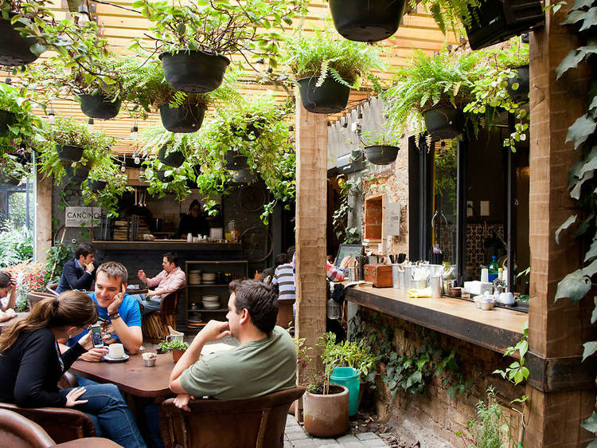
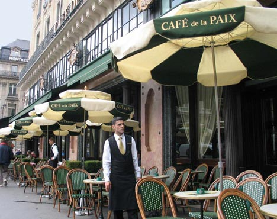
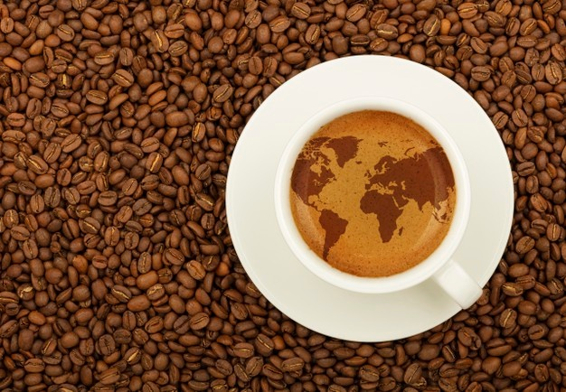
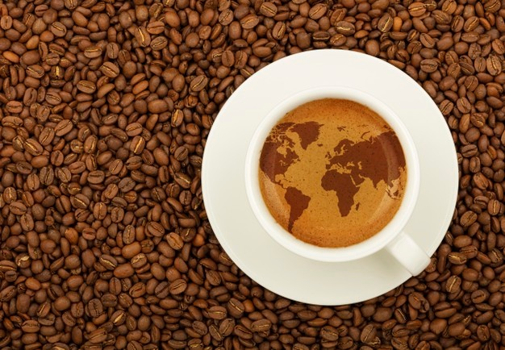

Acerca de Nosotros:
Bienvenido a nuestra tienda de café en línea. Aquí puedes encontrar una amplia variedad de cafés de alta calidad, desde granos enteros hasta mezclas de café molido, así como productos para la preparación y el consumo de café. En nuestra tienda, nos enorgullece ofrecer una experiencia de compra en línea fácil y segura, con envío a domicilio y opciones de pago convenientes. Además, contamos con un equipo de expertos en café que están disponibles para responder cualquier pregunta que puedas tener y ayudarte a encontrar el café perfecto para ti.
Galería de Fotos
|  |


|
 

|